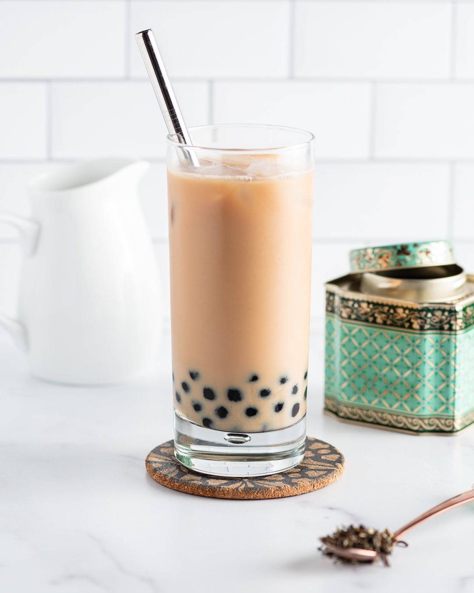

Classic Boba
Return

A Timeless Favorite: Indulge in our Classic Boba Delight
Dive into nostalgia with our Classic Boba Delight, a timeless favorite that brings together the rich flavor of black tea, the creamy texture of milk, and the satisfying chewiness of tapioca pearls. Sip and savor the comforting familiarity of this traditional boba drink.
Ingredients
- Black tea leaves
- Water
- Milk or non-dairy milk
- Sugar
- Tapioca pearls
Steps
-
Prepare tapioca pearls
- Bring a pot of water to a boil.
- Add tapioca pearls to the boiling water and cook according to package instructions until they become soft and chewy.
- Once cooked, drain the tapioca pearls and rinse them under cold water to prevent sticking. Set aside.
-
Brew Black Tea
- Boil water and steep black tea leaves in hot water according to package instructions to create strong black tea.
- Strain the tea leaves and let the brewed tea cool to room temperature.
-
Prepare Sweetened Milk
- In a separate container, mix milk (or non-dairy milk) with sugar to taste until the sugar is fully dissolved.
-
Assemble the Drink
- Add a spoonful of cooked tapioca pearls to the bottom of serving glasses.
- Pour the brewed black tea over the tapioca pearls, filling the glasses halfway.
- Top the tea with sweetened milk mixture, filling the glasses almost to the top.
-
Serve and Enjoy
- Insert a wide straw into each glass, allowing drinkers to enjoy the boba pearls along with the black tea and sweetened milk.
- Serve the Classic Boba immediately and enjoy the comforting flavors!